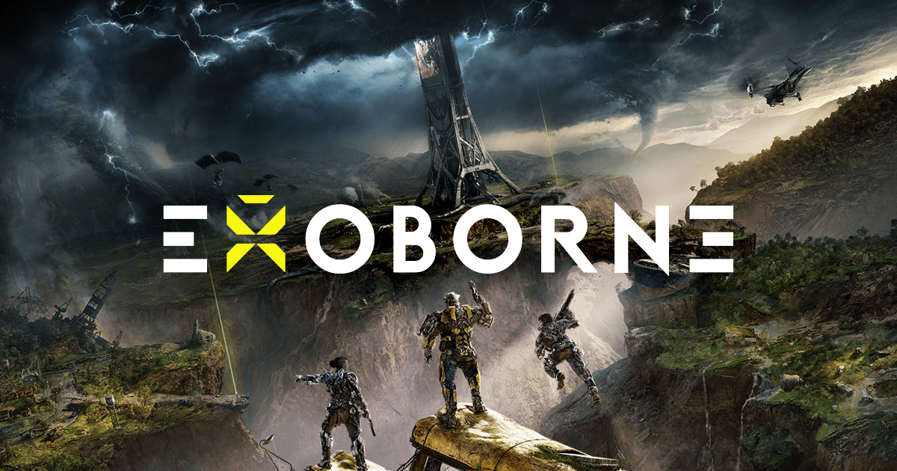
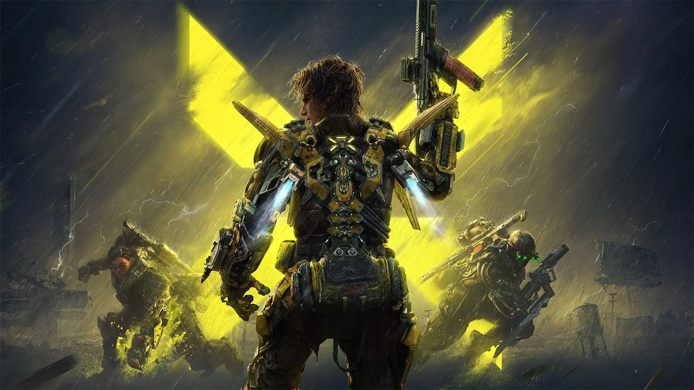
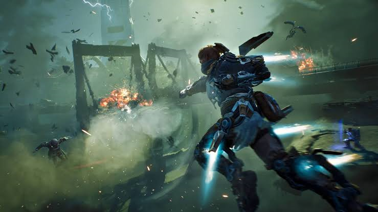

Exoborne
A third-person shooter extraction game with a futuristic tech flair.
Introduction
I started working on this project a bit into production since it was being worked on in parallel with Bloodhunt, and I stayed on that project even after most developers had moved over to this one.
However similar to Bloodhunt, I joined as some larger changes were being made to the game and could join a fairly new feature team.
On this project my role has been even more specialized than in the last project, staying in one feature team and having a more specific role.
I joined the feature team as an intermediate system engineer while the other programmers on the team were junior 3C engineers, which has made me learn a lot about how to manage and foster junior members of a team.

Exos
The feature team I've worked in on this project is the "Exo" team. We handle most things that has to do with the exos, which mostly include the abilities, mods and the exo itself.
Since I had worked on the ability system in Bloodhunt for multiple years, it was an obvious fit for me.
The exo system I've since been responsible for went through some major changes in direction early on which led me to make sure the system stays as flexible as possible.
This has saved a lot of time over the development of the project.

The Gameplay Ability System
For Exoborne we're using unreals Gameplay Ability System (GAS) instead of the custom made ability system we had for Bloodhunt.
The reason for this was to enable designers to make abilities themselves in unreal blueprints, which they couldn't really do in the Bloodhunt ability system since it wasn't designed to have its abilities be made entierly in blueprints.
After working with this system for multiple years I've found both a lot of pros and cons with it. The pros are that it's easy to prototype with as it's very generic and most times easy to make the networking work well if you don't need to do anything special.
The cons are that if you need to do something the system wasn't designed for, like giving an ability an amount of charges depending on it's level or simply just using replicated properties, things will get complicated very quickly and you often need to take a deep dive into the plugin code.
The thoughest issue with GAS I've had to fix was because some abilities we have need to be replicated, which it turned out introduces a risk of the ability being replicated too slow and causing the replicated array of abilities to replicate with an empty entry.
That means the system will tell the ability's default object that it has been given to the player instead of the instantiated object, which later will be replicated and never told it has been given to the player.
This caused a crash due to basic info not being set in the system and was not easy to even figure out where it came from, much less to actually find a fix for.
Since it's an inherit issue with how the core design of the ability system, I ended up fixing it by making the system wait with replicating the array entry until the client confirms that the ability is replicated,
which unfortunately both adds network calls and delays the ability initialization.
Since then, Epic has deprecated a lot of network functionality for abilities with warnings in UE5.5, notably replicated properties, without giving an alternate means of getting the same functionality (RPCs don't work for all the same cases), which is quite annoying.
The deprecations also wouldn't prevent the crash from happening so I doubt it was done due to that, but this does make me feel like they don't have a good grasp of their own system.
Other systems
Some other systems I worked on include:
- Player tracks system using custom replication graph
- Stat systems
- Custom cone overlap calculation for damage
- Scanning system (revealing objects)
- Predictive projectile system for generic replicated projectile actors
